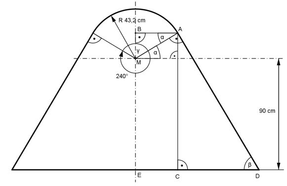

Aufgabe 390 Wie groß sind das Volumen V. die Oberfläche O und die Fläche A des Achsenschnittes des Ziersteins aus Marmor?  V = VKegelstumpf + VKugelabschnitt Im Dreieck MAB gilt: MA = rKugel 240° - 180° α = --------------- = 30° = ∡ MAB (Z-Winkel) 2 BA cos α = ---- |*MA MA BA = MA * cos α = MA * cos 30° = 43,2 cm * 0,866 = 37,4 cm MB sin α = ---- |*MA MA MB = MA * sin α = MA * sin 30° = 43,2 cm * 0,5 = 21,6 cm Höhe des Kugelabschnitts hKA = rKugel - MB = 43,2 cm - 21,6 cm hKA = 21,6 cm л VKugelabschnitt = --- * hKA² * (3 * rKugel - hKA) 3 л VKugelabschnitt = --- * 21,6² * (3 * 43,2 - 21,6) cm³ = 52 740 cm³ 3 VKugelabschnitt = 0,053 m³ BA = r1 = oberer Radius des Kegelstumpfes ∡ MAC = 60° ∡ CAD = 30° --> β = 60° EM = 90 cm = 0,9 m MB = 21,6 cm = 0,216 m EB = EM + MB = 0,9 m + 0,216 m = 1,116 m = AC = Höhe des Kegelstumpfes = hKS Im Dreieck ACD gilt: AC tan β = ---- |*CD CD CD * tan β = AC |:tan β AC AC 1,116 m CD = ------- = ---------- = ---------- = 0,644 m tan β tan 60° 1,732 EC = BA = 37,4 cm = 0,374 m ED = EC + CD = 0,374 m + 0,644 m = 1,018 m = unterer Radius des Kegelstumpfes = r2 л VKegelstumpf = --- * hKS * (r1² + r1 * r2 + r2²) 3 л VKegelstumpf = --- * 1,116 * (0,374² + 0,374 * 1,018 + 1,018²) m³ 3 VKegelstumpf = 1,819 m³ V = 1,819 m³ + 0,053 m³ = 1,87 m³ O = Kegelstumpfmantelfläche MKS + Kappenfläche K + Grundkreisfläche G Im Dreieck ACD gilt: AC sin β = ---- |*DA DA DA * sin β = AC | :sin β AC AC 1,116 m DA = -------- = --------- = ---------- = 1,29 m sin β sin 60° 0,866 MKS = л * DA * (r1 + r2) = л * 1,29 * (0,374 + 1,018) m² = 5,64 m² K = 2 * л * rKugel * hKA = 2 * л * 0,432 m * 0,216 m = 0,586 m² G = л * r2² = л * 1,018² m² = 3,254 m² O = 5,64 m² + 0,586 m² + 3,254 m² = 9,48 m² A = Trapezfläche T + Kreisausschnittfläche K - Dreieckfläche D r1 + r2 0,374 m + 1,018 m T = 2 * --------- * hKS = 2 * ------------------------ * 1,116 m = 1,55 m² 2 2 Mittelpunktswinkel γ = 360° - 240° = 120° л * rKugel² * γ л * 0,432² m² * 120° K = ----------------- = ------------------------ = 0,195 m² 360° 360° 2 * BA * MB D = --------------- = 0,374 m * 0,216 m = 0,081 m² 2 A = 1,55 m² + 0,195 m² - 0,081 m² = 1,66 m²